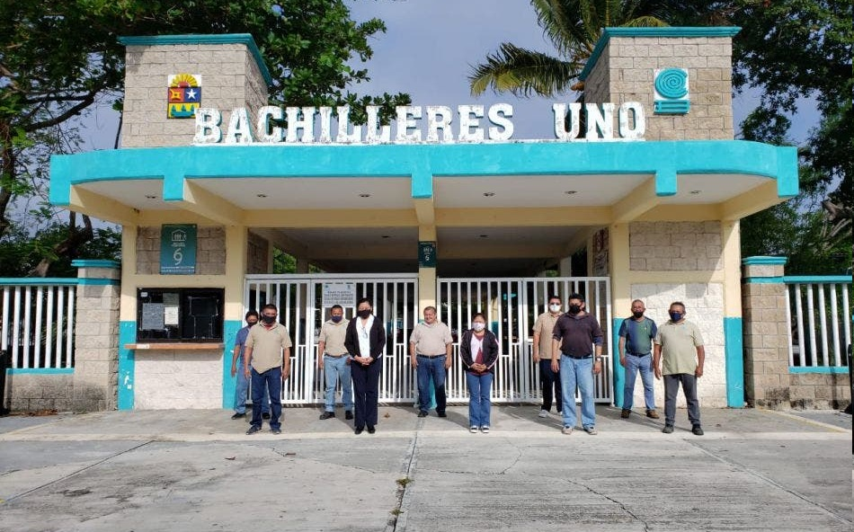
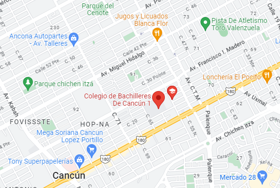
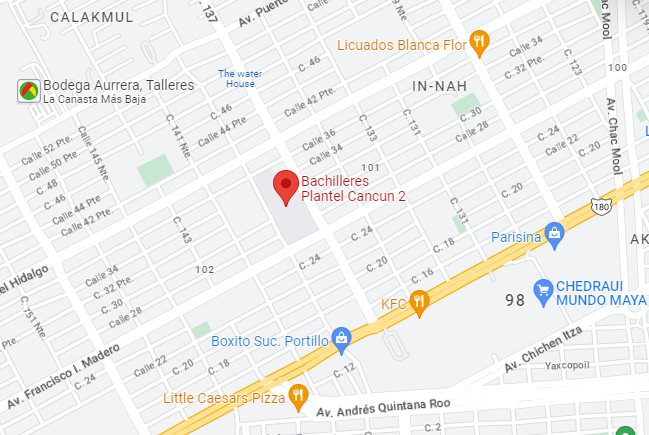
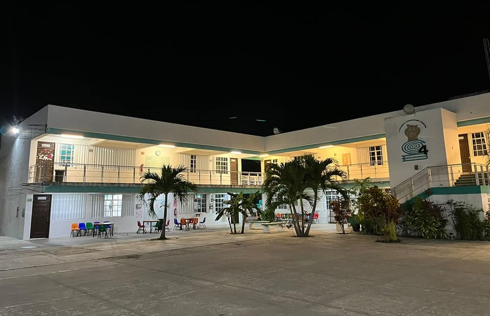
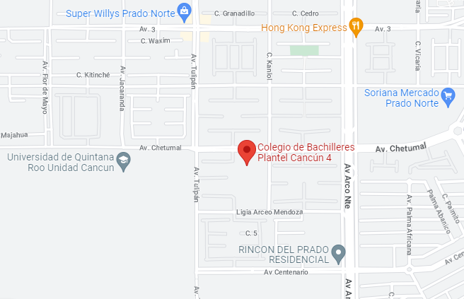

Bachilleres Plantel Cancún Uno


Esta ubicado en Calle 21, Region 91 Manzanas 56 y 57 Nuevos, Horizontes, 77516 Cancún, Q.R.
Este plantel cuenta con un buen nivel académico, los maestros son comprometidos con la educación de los estudiantes, los motivan a preprararse y estudiar y las instalaciones estan en condiciones optimas. Podemos destacar las capacitaciones de Dibujo Arquitectónico y de Construcción, Laboratorista Clínico, Lengua Inglesa, entre otras.
Núm. de contacto: 998 888 5066
Bachilleres Plantel Cancún Dos

El Plantel Dos cuenta con grandes instalaciones, fomenta el compañerismo, tabajo en equipo, responsabilidad y un buen aprendizaje para los alumnos. Cuenta con un buen equipo de docentes y personal administrativo que buscan el bienestar de los alumnos. Sus capacitaciones son Turismo, Contabilidad, Administración, Comunicación y Tic's.
Se encuentra ubicado en Av. Francisco I. Madero 30, 77538 Cancún, Q.R.
Núm. de contacto: 998 888 7204
Bachilleres Plantel Cancún Cuatro


Este plantel se encuentra ubicado en Av. Chetumal SM 260, Fraccionamiento Prado Norte, 77519 Cancún, Q.R. Tiene algunas especialidades que en las otras instituciones no hay, como por ejemplo, Recursos Humanos, Química, Biblioteconomía y Diseño y Programación. Es un plantel que si bien algunos piensan que esta algo lejos, es bueno ya que fomenta la educación y el desarrollo de los jóvenes y tiene buenas instalaciones.
Núm. de contacto: 998 223 2134